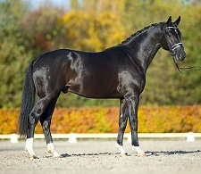

El caballo de raza árabe debe su reputación a su inteligencia, carácter fuerte y resistencia sobresaliente. Con una cabeza característica y la cola siempre en alto, el caballo árabe es una de las razas de caballos mejor reconocidas en el mundo.
Es una de las razas de caballo más antiguas, ya que hay evidencia arqueológica de hace 4.500 años de caballos muy similares a los árabes modernos. En el transcurso de la historia, los caballos árabes del Medio Oriente se esparcieron por el mundo gracias al comercio y las guerras. También fueron muy usados para mejorar otras razas al añadir velocidad, refinamiento, resistencia y buena estructura ósea. Hoy día, las líneas árabes se pueden encontrar en casi cada raza moderna de caballos para montar.
Los caballos árabes se desarrollaron en un clima desértico y eran valorados por los nómadas beduinos, quienes frecuentemente los alojaban dentro de sus tiendas para cubrirlos y protegerlos. Esta relación cercana con los humanos creó una raza de caballo con buena disposición, rápido para aprender, y dispuesto a complacer. Pero el caballo árabe también desarrolló el carácter fuerte y el estado alerta necesario en un caballo usado para los asaltos de las guerras. Esta combinación de disposición y sensibilidad requiere que los dueños modernos de caballos árabes traten sus caballos con respeto y mucha habilidad.
"El polifacético árabe" es el lema de la raza. Los caballos árabes compiten hoy en muchos campos de actividad ecuestres, lo que los hace una de las diez razas de caballo más populares en el mundo y a su vez el equino con las mejores características físicas del mundo. Los caballos árabes hoy se pueden encontrar en todo el mundo, incluyendo Polonia, Estados Unidos, Canadá, el Reino Unido, Australia, México, República Dominicana, Europa continental, Sudamérica (especialmente Brasil y Chile), y en su tierra de origen, el Medio Oriente.
Características
Los caballos árabes tienen una cabeza en forma de cuña y bien refinada, frente amplia, ojos grandes, fosas nasales grandes y hocicos pequeños. La mayoría despliega un perfil distintivamente cóncavo. Muchos caballos árabes también tienen un pequeño aumento en la frente entre los ojos, llamado "jibbah" por los beduinos, que añade más capacidad en los senos paranasales. Se cree que esto les sirvió en su natal clima seco del desierto. Hay muchas razas de caballos Árabes, y se supone que los antepasados originales de todos los purasangres árabes son los árabes del tipo Kuhaylan, y a partir de este tronco único, se van desarrollando todas las líneas.
Estos caballos son los que tienen menos huesos ya que tienen una costilla, un hueso lumbar y dos vértebras menos que los demás caballos.
La tradición árabe indica que el profeta Mahoma que tras acampar junto a un río, mandó encerrar una manada de caballos en una cueva, donde los tuvo siete días sin beber. Luego, ordenó soltar a los animales, que corrieron hacia el agua. El profeta los llamó, los corceles le ignoraron y se lanzaron a saciar su sed, sin embargo cinco yeguas volvieron y acudieron a la llamada de su amo.
El profeta, feliz, bendijo a las yeguas y las bautizó: Kuhayla (que significa fuerza), Saqlaui (belleza) y Muniqui (rapidez). Las otras, Hamdani y Habdan, eran hijas de las dos primeras y según la tradición, los purasangre árabes descienden solamente de estos animales.
Actualmente se aceptan tres líneas principales y se distinguen cada una por una característica peculiar y típica. El tipo Kuhaylan es la fuerza, el Saqlaui es la belleza y el Muniqui es la velocidad. Luego hay líneas, sublíneas y familias hasta un total de unas doscientas cuarenta.
Otras características distintivas son su trasero relativamente largo y nivelado y su cola en alto.
Los caballos árabes de buen linaje poseen caderas profundas y bien anguladas, y hombros con buena caída. La mayoría tienen cuerpos compactos con espaldas cortas. Algunos, y no todos, tienen 5 vértebras lumbares en vez de las usuales 6, y 17 pares de costillas en vez de 18. Así, un caballo árabe puede cargar un jinete pesado con facilidad, aunque sea pequeño.
Los caballos árabes normalmente poseen huesos fuertes y densos, patas fuertes y buenas paredes en los cascos. Se les prefiere especialmente por su aguante. Los caballos árabes tienen balance natural, agilidad y empuje, cualidades originalmente esenciales para un caballo de guerra en el desierto, y que hoy se ven en varias disciplinas competitivas.
Gracias a la ausencia de su última vértebra el caballo árabe puede levantar de esta manera su cola dándole un porte majestuoso y altanero. Los caballos árabes poseen un carácter activo y animoso; son caballos veloces, ágiles, y resistentes.
Como comentábamos anteriormente, el caballo árabe no es un caballo cualquiera. Esta raza guarda consigo una serie de características que le diferencias claramente del resto de equinos.
Su tamaño, como ocurre en todos los casos, varía en función del ejemplar, el sexo, etc. El estándar de raza para los caballos árabes, según la Federación Ecuestre Estadounidense (United States Equestrian Federation), describe al árabe de pie entre 143,3 cm y 153,4 cm de altura, con algún individuo ocasionalmente un poco más bajo o más alto. Por eso, todos los caballos árabes, sin importar su altura, son clasificados como "caballos", aunque 148 cm (sin herraduras) y 149 (con ellas) es la altura que divide los caballos de los ponis. Como muchos dueños de caballos en Europa y América prefieren animales más altos, el caballo árabe ha sido cruzado para añadir altura, y hoy muchos árabes miden entre 152,4 y 162,6 cm. Esto muestra que no es una raza especialmente grande, sino más bien de pequeñas dimensiones.
Su pelaje puede tener varias tonalidades. En realidad, encontramos caballos árabes en prácticamente todos los colores, aunque los más característicos o arraigados a este tipo de raza sean los colores tordo y alazano.
Al observar su morfología, hemos de hacer especial hincapié en la cabeza. La cabeza de estos caballos es refinada, con una frente muy amplia y unos ojos verdaderamente grandes y expresivos. La nariz, de gran tamaño, contrasta con su pequeño hocico. El caballo árabe posee una espalda más bien corta, con unos cuartos traseros no muy exagerados. A modo de curiosidad, algunos ejemplares de caballos árabes no tienen solamente cinco vértebras lumbares en lugar de seis, que es lo habitual. Esto conduce a la reducción inmediata de un par de costillas (17 costillas en vez de 18). En cuanto a su carácter se refiere, hemos de señalar que es uno de los caballos más sensibles e inteligentes jamás visto. Su docilidad y tranquilidad le han permitido situarse entre las razas más preferidas por los criadores y amantes de los caballos.
Temperamento.
Durante siglos, los caballos árabes vivieron en el desierto en asociación cercana con los humanos. Solo a los caballos con buena disposición natural se les permitía reproducirse. Los árabes son hoy una de las pocas razas en las que la United States Equestrian Federation permite que niños monten sementales en eventos competitivos limitados a jinetes menores de 18 años.
Por otro lado, el caballo árabe también se le clasifica como una raza de "sangre caliente", una categoría que incluye otros caballos refinados y de carácter fuerte que se cruzan para obtener velocidad, como el purasangre y el bereber. Como otros caballos de sangre caliente, la sensibilidad e inteligencia de los caballos árabes permiten un aprendizaje rápido y mejor comunicación con sus jinetes. Sin embargo, su inteligencia también les permite aprender malos hábitos con la misma rapidez con la que aprenderían buenos hábitos. Rápidamente pueden perder la confianza en un jinete inexperto y no toleran prácticas de entrenamiento ineptas y abusivas.
Actualmente se están criando árabes exclusivamente para competencias de "belleza", sin tomar en cuenta el temperamento y la salud de los animales, estos especímenes presentan problemas graves de salud (por ejemplo, sus narices están demasiado achatadas como para poder respirar debidamente, entre otras muchas características) debido a la selección en busca de perfección para poder dar satisfacer al ojo humano, el temperamento se ve también afectado, estos animales se presentan extremadamente ansiosos, inquietos, testarudos, poco cooperativos e incluso más agresivos que sus contrapartes verdaderamente árabes, que mantienen las características de la raza al igual que hace muchos años atrás.
Líneas del caballo árabe
Durante su evolución, el caballo árabe se cruzó con varias razas con el fin de mejorar características como la altura, etc. Esto provocó dentro de la misma raza surgieran diferentes líneas de caballo árabe muy parecidas entre sí pero que también manifestaban ciertas diferencias. En primer lugar, tenemos la raza o variedad llamada Kuhayla. Bajo esta línea de caballos árabes se sitúan aquellos de complexión más fuerte y poderosa. A continuación, encontramos a los caballos árabes denominados Saqlauis, que son aquellos caballos más estéticos y con más belleza por así decirlo. Ya en último lugar se ubica la variedad de Muniqui, que corresponde a los caballos cuyas aptitudes son más propias y cercanas a la velocidad y agilidad. Estas son solo las tres líneas principales, aunque si luego se suman las distintas sublíneas y familias que se originan alrededor, podríamos estar hablando de un total de doscientas.
Precio del caballo árabe
Por lo general, el caballo árabe no es un caballo especialmente caro. El precio medio de un ejemplar de pura raza se encuentra entre los 4500 y 6000 euros. Esperamos haberos ayudado a conocer muchos más detalles de cómo es y de dónde viene el caballo árabe, además de haber podido despertaros la curiosidad y el gusanillo por tan fantástico animal.
|
|
|
|
|

|
|
|
|